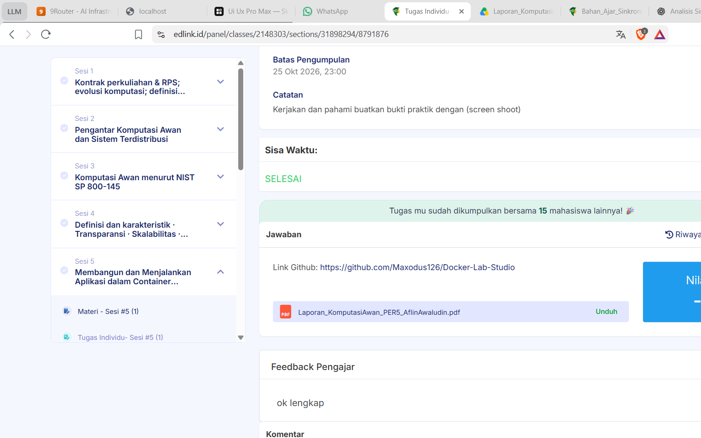

AllSense Control — panel ringkas untuk kecerahan, volume, dan mode daya Windows. Universal, tanpa admin, tanpa driver vendor, dengan OSD ala laptop gaming.

Semua kontrol dalam satu panel ringkas yang menempel di sisi layar.
Hemat, Balanced, Turbo — berganti seketika.
Menyinkronkan kondisi asli perangkat.
Info AC/baterai, resolusi, dan refresh rate.
Klik salah satu mode. Status akan muncul sebagai overlay ala laptop gaming — persis seperti di aplikasi.
Hemat / Balanced / Turbo dengan animasi OSD berwarna per mode.
Slider menyinkronkan kondisi asli perangkat, ikut Fn/OS.
Indikator hidup/mati radio langsung dari Windows.
Ketik atau rekam kombinasi sendiri; tersimpan permanen.